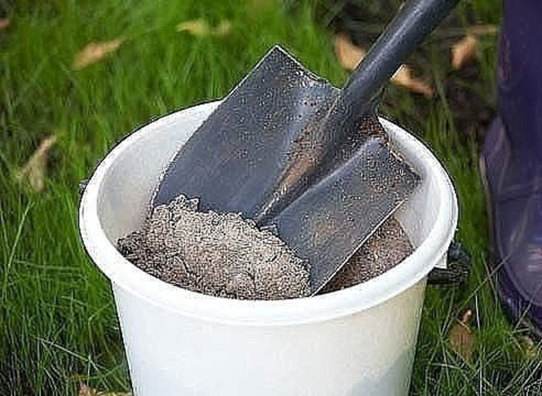

Каталог
ПРИМЕНЕНИЕ ЗОЛЫ: УДОБРЕНИЕ И СРЕДСТВО ОТ ВРЕДИТЕЛЕЙ

Зола представляет собой минеральный остаток, образующийся при сжигании различных органических веществ. В первую очередь, это хорошее калийно-фосфорное и известковое удобрение. Но она содержит еще до 30 минеральных компонентов, в том числе, массу микроэлементов. В ней есть калий, кальций, фосфор, магний, микроэлементы – железо, кремний, сера, бор, марганец и другие. Но она совсем не содержится азота. В ней абсолютно нет хлора, отрицательно влияющего на рост многих культур (например, капусты, картофеля).
Состав золы зависит от сжигаемого материала. Зола березовых дров богата калием и фосфором (14 и 7%, соответственно), кальцием (свыше 30%). Ценную золу дает ботва картофеля, которая содержит свыше 20% калия, до 8% фосфора и около 32% извести. Калием и кальцием очень богата зола из соломы гречихи и подсолнечника. Наименее ценной является зола торфа и каменного угля.
Повышенное содержание кальция в золе обусловливает ее раскисляющие свойства. Наибольшее количество соединений кальция содержит зола древесных лиственных и хвойных пород. Однако не следует пренебрегать и сжиганием сорняков, разнотравья – в такой золе больше калия.
При внесении золы происходит раскисление почвы, а одновременно – подавление патогенной микрофлоры, предпочитающей кислую среду для развития. Она также нелюбима некоторыми вредителями, что можно успешно использовать для безопасной борьбы с ними.
Внесение золы очень желательно под те культуры, которые предпочитают почвы от слабокислой до щелочной. Из цветочных культур это календула, левкой, анютины глазки, гипсофила, настурция, петуния, душистый табак, тюльпаны, лилии, гиацинты, хризантемы, астры, колокольчики, маргаритки, клематисы, розы, шалфей, котовник, дельфиниум, барбарисы, пионы. Из овощных культур с благодарностью отнесутся на внесение золы капустные, томаты, картофель, огурцы, корнеплоды. При пересадках комнатных растений полезно добавить 2 столовые ложки золы на 1 л грунта для любимых гераней, фуксий, цикламенов.
Обычно золу вносят в сухом виде при подготовке почвы к посадке растений. Нормы внесения зависят от кислотности и качества почвы и потребностей выращиваемых культур. Хранят золу в сухом месте, так как при намокании она теряет один из самых ценных компонентов – калий. Зола хорошего качества может служить заменой калийным удобрениям. Однако и намокшая зола сохраняет массу ценных веществ, ее используют при компостировании либо для внесения в жидком виде. Можно добавлять настой золы в растворы минеральных удобрений для подкормок, но нельзя сочетать ее с растворами органических удобрений.
Настой древесной золы
Для внесения в жидком виде готовят настой золы, для чего ее «заваривают» кипятком. При этом происходит извлечение растворимых веществ, которые становятся более доступны для усвоения растениями. Столовую ложку «с горкой» заливают литром кипятка и настаивают неделю, периодически помешивая. После этого раствор можно использовать как для удобрения цветников и грядок, так и рассады названных культур. Для рассады можно использовать чистый настой золы или в смеси с растворами минеральных удобрений каждые 2 недели.
Зола в борьбе с вредителями
Зола может служить подмогой в борьбе в некоторыми назойливми вредителями.
Против тли и гусениц на капусте. Настой готовят накануне обработки, для чего 1 стакан золы заливают 10 л холодной воды, перемешивают и оставлют до утра. Утром снова перемешивают и процеживают. Опрыскивают растения до начала лета бабочек (в 5-6 ч утра), захватывая нижнюю часть листьев. Обработки повторяют ежедневно.
Против тли делают отвар: 300 золы просеивают, заливают водой и кипятят 20 минут. Дают отстояться, отцеживают, доводят до 10 л и используют для обработок.
Против мучнистой росы крыжовника. Для первого опрыскивания ведро золы кипятят в трех ведрах воды в течение часа, охлаждают, процеживают и затем используют.
Для второго опрыскивания на 0,5 ведра золы берут 2 ведра воды и кипятят 1 час. Применяют этот раствор после образования завязей.
Против личинок колорадского жука. Опудривание личинок колорадского жука сухой золой приводит к их гибели в течение 2-х суток.
Против крестоцветных блошек. Утреннее опыливание древесной золой всходов капустных культур с использованием сита отпугивает вредителей.
Против слизней. Доступ слизней к растениям ограничивают любые вещества, раздражающие подошву моллюска. В этом плане метальдегид способна заменить зола – ею посыпают землю концентрическими кругами вокруг растений (однако этот метод неприемлем для кислотолюбивых растений). Недостаток этого метода состоит в том, что, намокая под дождем, зола перестает действовать, поэтому нужно либо возобновлять ее с наступлением сухой погоды, либо чередовать с красным молотым перцем, а еще лучше – параллельно ставить ловушки для слизней из досок, под которые подкладывают мокрые тряпки. Каждый день ловушки проверяют и собирают слизней. В совокупности эти методы позволяют обойтись без применения химических препаратов.